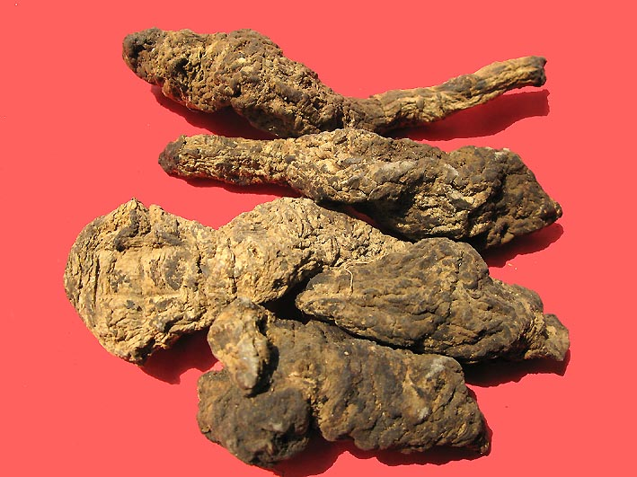

Shúdìhuáng · Prepared rehmannia root熟地黄
Rehmanniae Radix Praeparata · Supplementing herbs: blood tonicsRehmanniae Radix Praeparata · 补虚药·补血药




- Flavour · nature性味
- sweet; slightly warm甘，微温
- Channels归经
- Liver, Kidney肝、肾经
- Direction升降浮沉
- Sweet, warm and moist, mainly descending; it stays in the lower burner, enriching liver and kidney yin and blood; its cloying nature can burden digestion甘温质润，沉降为主，静守下焦，滋补肝肾阴血；滋腻之性易碍脾胃
- Toxicity毒性
- Non-toxic无毒
- Dose (pharmacopoeia)用量（药典）
- 9–15 g (ceiling 15 g)（上限 15 克）
Decocted; because it is cloying it is often paired with Sha Ren or Chen Pi to keep digestion moving煎服；滋腻碍胃，常配砂仁、陈皮等理气健脾药 - Pregnancy孕期
- No pregnancy restriction listed (not proof of safety)未列孕期禁忌（不等于已证明安全） No pregnancy restriction in the pharmacopoeia or textbooks (which is not proof of safety).药典与教材未列孕期禁忌（这不等于已证明孕期安全）。
- Health Canada加拿大卫生部
- Health Canada status: still to be verified加拿大卫生部状态：待核验 An NHPID monograph or ingredient entry for rehmannia is still to be verified.加拿大天然保健品数据库中地黄的专论或成分条目待核验。
- Conservation资源与保护
- Cultivated (Huai Di Huang from Jiaozuo, Henan, is the classic origin); no controls.栽培品（河南焦作「怀地黄」为道地），无管制。
- Source来源
- Rehmannia glutinosa Libosch.. The tuberous root of Rehmannia glutinosa, stewed with wine or steamed (fresh, dried and prepared rehmannia are the same root, processed differently)Rehmannia glutinosa Libosch.。玄参科植物地黄的块根，经酒炖或蒸制而成（生地黄、干地黄、熟地黄同出一物，加工不同）
Traditional actions and indications功效与主治（传统）
🏛 Traditional statements, not efficacy claims; the modern evidence is graded further down.以下为传统说法，不是疗效主张；现代证据见下文分级。
- Supplements blood and enriches yin补血滋阴
- Boosts essence and fills the marrow益精填髓
Sallow complexion, palpitations, irregular periods and uterine bleeding from blood deficiency; liver-kidney yin deficiency with sore weak lower back and knees, steaming-bone tidal fever, night sweats, seminal emission and wasting-thirst; dizziness, tinnitus and early greying.血虚萎黄、心悸怔忡、月经不调、崩漏下血；肝肾阴虚、腰膝酸软、骨蒸潮热、盗汗遗精、内热消渴；眩晕耳鸣、须发早白。
How to recognise it怎么认
Growing植株 A perennial 10–30 cm tall, densely covered with long grey hairs and glandular hairs; mostly basal rosette leaves with toothed edges; purple-red tubular trumpet-like flowers in spring and summer. The tuberous root is fleshy and reddish-yellow.多年生草本，高 10–30 厘米，全株密被灰白色长柔毛和腺毛；叶多基生，莲座状，边缘有齿；春夏开紫红色筒状花，略似喇叭。块根肉质，红黄色。
Decoction pieces饮片 Irregular lumps and pieces of uneven size; jet black, glossy and very sticky; soft and tough, hard to snap, the break black and shiny. Faint smell; sweet. (Dried raw rehmannia is greyish- or brownish-black with a brown-yellow to black break and a faintly sweet taste.)不规则块片或碎块，大小厚薄不一；表面乌黑色，有光泽，黏性大；质柔软而带韧性，不易折断，断面乌黑色、有光泽。气微，味甜。（干地黄则为灰黑或棕黑色、断面棕黄至黑色，味微甜。）
No photo of the glossy black prepared root after two Commons searches (2026-11-24 and 25); the dried picture is raw rehmannia.缺熟地黄（乌黑油润）饮片照：Commons 11-24、11-25 两轮未检到；现有饮片图是干地黄（生地）。
Processing炮制
- Fresh / dried rehmannia (Sheng Di)生地黄（鲜地黄、干地黄）：: Cold; clears heat, cools blood, nourishes yin and fluids; opposite in temperature to the prepared root and not interchangeable性寒，清热凉血、养阴生津——与熟地黄寒温相反，不能互换
- Prepared rehmannia (Shu Di)熟地黄：: Wine-steaming turns it from cold to warm and from clearing to supplementing, for blood and yin; 'steamed and sun-dried nine times' is the traditional standard酒蒸后由寒转温，由清转补，专于补血滋阴；「九蒸九晒」是传统讲究
- Charred Shu Di熟地炭：: Charred, mainly to stop bleeding炒炭后偏于止血
Cautions and incompatibilities使用注意与配伍禁忌
Avoid with qi stagnation and copious phlegm, abdominal distension and pain, poor appetite or loose stools; when used heavily or long, pair with qi-moving, spleen-strengthening herbs.气滞痰多、脘腹胀痛、食少便溏者忌服；重用、久服宜配理气健脾药。
Interactions with medicines与西药的相互作用
No reliable study of prepared rehmannia and drug interactions was found; it is high in sugar, so people with diabetes taking honey pills that contain it (such as Liu Wei Di Huang Wan) should count the sugar and honey.未查到熟地黄与西药相互作用的可靠研究；含糖量高，糖尿病人用含熟地的蜜丸（如六味地黄丸）要把糖与蜂蜜算进去。
Modern research, graded现代研究（分级）
- E4 Rehmannia oligosaccharides and catalpol have reported activity related to blood sugar and blood formation in animal work; human evidence comes mostly from formula studies with mixed results.地黄寡糖、梓醇等在动物实验中有与血糖、造血相关的活性报道；人体证据主要来自复方研究，结论不一。
In the classics古籍原文
「乾地黃味甘寒。主治折跌絕筋傷中，逐血痹，填骨髓，長肌肉」——神农本草经
Shennong Bencao Jing (Divine Farmer's Materia Medica)
The Shennong Bencao Jing has only dried rehmannia, which it calls cold; the prepared root came into general use after the Song dynasty and is slightly warm. Its 'fills the marrow' was inherited by prepared rehmannia as 'boosts essence and fills the marrow'. When reading the classics, note that Zhang Zhongjing's Shen Qi Wan used dried rehmannia, while Qian Yi's Liu Wei Di Huang Wan is usually made with the prepared root.《神农本草经》只有「干地黄」，性「寒」——熟地黄是宋代以后才普遍使用的炮制品，性转微温。本经「填骨髓」一句，后来被熟地黄继承为「益精填髓」。读古籍时要分清：仲景肾气丸用的是干地黄，钱乙六味地黄丸后世多用熟地黄。
Where it is used: the web串联：它在哪些方里、连到哪里
Later formulas (Song to Qing)时方（宋元明清）
| Formula方 | Role角色 | Dose: original / today剂量：原书／今用 | Partners in the formula同方配伍 |
|---|---|---|---|
| Great Tonify the Yin Pill大补阴丸 | Monarch君 | original text: see the Chinese original原文此处未单独标注（酒蒸） | Gui Jia (tortoise plastron)龟甲 · Huángbǎi (Phellodendron Bark)黄柏 · Zhīmǔ (Anemarrhena rhizome)知母 · Zhu Ji Sui (pig spinal marrow)猪脊髓 |
| Angelica Six-Yellows Decoction当归六黄汤 | Monarch君 | original text: see the Chinese original等分 | Dāngguī (Chinese Angelica Root)当归 · Sheng Di Huang (rehmannia root)生地黄 · Huángqín (Baikal skullcap root)黄芩 · Huang Lian (coptis rhizome)黄连 · Huángbǎi (Phellodendron Bark)黄柏 · Huángqí (Astragalus root)黄芪 |
| Two-Cinnabar Pill二丹丸 | Monarch君 | original text: see the Chinese original兩半 | Dānshēn (Salvia root (Danshen))丹参 · Asparagus root天冬 · Ophiopogon root麦冬 · Poria with hostwood茯神 · Gāncǎo (Licorice root)甘草 · Cinnabar (mercuric sulfide)丹砂 · Rénshēn (Ginseng (Asian))人参 · Acorus rhizome菖蒲 · Polygala root远志 |
| Six-Ingredient Rehmannia Pill六味地黄丸 | Monarch君 | original text: see the Chinese original八两（砂仁酒拌，九蒸九晒） 24 g | Shānzhūyú (Cornelian Cherry Fruit)山茱萸 · Shan Yao (Chinese yam)山药 · Ze Xie (water plantain rhizome)泽泻 · Mǔdānpí (Moutan Bark)牡丹皮 · Fúlíng (Poria)茯苓 |
| Ginseng Nourishing-Nutritive Decoction人参养荣汤 | Monarch君 | original text: see the Chinese original原文未注 | Rénshēn (Ginseng (Asian))人参 · Bai Zhu (white atractylodes rhizome)白术 · Huángqí (Astragalus root)黄芪 · Gāncǎo (Licorice root)甘草 · Chénpí (Dried tangerine peel)陈皮 · Rou Gui (cassia bark)肉桂 · Dāngguī (Chinese Angelica Root)当归 · Wu Wei Zi (schisandra fruit)五味子 · Báisháo (White peony root)白芍 · Fúlíng (Poria)茯苓 · Yuan Zhi (polygala root)远志 |
| All-Inclusive Great Tonifying Decoction十全大补汤 | Monarch君 | original text: see the Chinese original原文未注 | Rénshēn (Ginseng (Asian))人参 · Baizhu (white atractylodes rhizome)白术 · Fúlíng (Poria)茯苓 · Gāncǎo (Licorice root)甘草 · Dāngguī (Chinese Angelica Root)当归 · Báisháo (White peony root)白芍 · Chuanxiong (Sichuan lovage rhizome)川芎 · Huángqí (Astragalus root)黄芪 · Rougui (cinnamon bark)肉桂 |
| Four-Substance Decoction四物汤 | Monarch君 | original text: see the Chinese original等分（汪昂本作生地黄三钱） | Dāngguī (Chinese Angelica Root)当归 · Báisháo (White peony root)白芍 · Chuan Xiong (Sichuan lovage)川芎 |
| Anemarrhena, Phellodendron and Rehmannia Pill知柏地黄丸 | Monarch君 | original text: see the Chinese original八两 | Shānzhūyú (Cornelian Cherry Fruit)山茱萸 · Shan Yao (Chinese yam)山药 · Zhīmǔ (Anemarrhena rhizome)知母 · Huángbǎi (Phellodendron Bark)黄柏 · Ze Xie (water plantain rhizome)泽泻 · Mǔdānpí (Moutan Bark)牡丹皮 · Fúlíng (Poria)茯苓 |
| Hidden Tiger Pill虎潜丸 | Minister臣 | original text: see the Chinese original三两 | Huángbǎi (Phellodendron Bark)黄柏 · Zhīmǔ (Anemarrhena rhizome)知母 · Hu Gu (tiger bone; banned)虎骨 · Gui Jia (tortoise plastron)龟甲 · Dāngguī (Chinese Angelica Root)当归 · Báisháo (White peony root)白芍 · Niu Xi (achyranthes root)牛膝 · Suo Yang (cynomorium stem)锁阳 · Chénpí (Dried tangerine peel)陈皮 · Gānjiāng (Dried ginger)干姜 · Yang Rou (mutton)羊肉 · Fúlíng (Poria)茯苓 · Gāncǎo (Licorice root)甘草 · Wu Wei Zi (schisandra fruit)五味子 |
Folk and single-herb remedies偏方、验方、单方
| Formula方 | Use用法 | Self-use能否自用 |
|---|---|---|
| Rehmannia rice porridge地黄粥 | Food食疗 | Low-risk household use, within the safety line below低风险家用，守住下面的安全线 same root, raw or prepared not stated同一块根，原方未分生熟 |
Patterns reached through these formulas经由这些方连到的证
- Liver-kidney yin deficiency肝肾阴虚 ← Great Tonify the Yin Pill大补阴丸, Hidden Tiger Pill虎潜丸, Six-Ingredient Rehmannia Pill六味地黄丸, Anemarrhena, Phellodendron and Rehmannia Pill知柏地黄丸Symptoms症状 Tinnitus and hearing loss耳鸣耳聋 · Dizziness and vertigo眩晕 · Low-back pain腰痛 · Insomnia不寐（失眠）
- Heart yin and blood deficiency with an unsettled mind阴虚血少、心神不安（心肾阴亏） ← Two-Cinnabar Pill二丹丸
- Dual deficiency of qi and blood气血两虚 ← Ginseng Nourishing-Nutritive Decoction人参养荣汤, All-Inclusive Great Tonifying Decoction十全大补汤
- Blood deficiency血虚（营血虚滞） ← Four-Substance Decoction四物汤
Exam notes (HER)考点（HER）
HER essentials: (1) raw versus prepared rehmannia: temperature and action; (2) the monarch among the 'three supplementing, three draining' of Liu Wei Di Huang Wan; (3) the monarch of Si Wu Tang; (4) handling its cloying nature.HER 必考：①生地、熟地的寒温与功效之别；②六味地黄丸三补三泻中的君药；③四物汤补血的君药；④滋腻碍胃的配伍处理。
Sources依据
- Chinese Pharmacopoeia Commission. Pharmacopoeia of the People's Republic of China, 2020 edition, vol. I国家药典委员会《中华人民共和国药典》2020 年版一部
- Zhong Gansheng (ed.). Chinese Materia Medica (national TCM higher-education textbook series)钟赣生主编《中药学》（全国中医药行业高等教育规划教材）